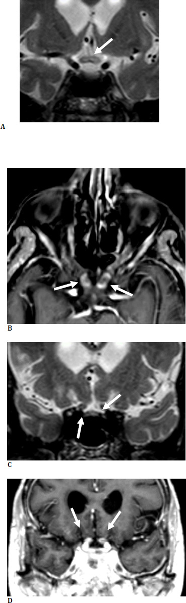
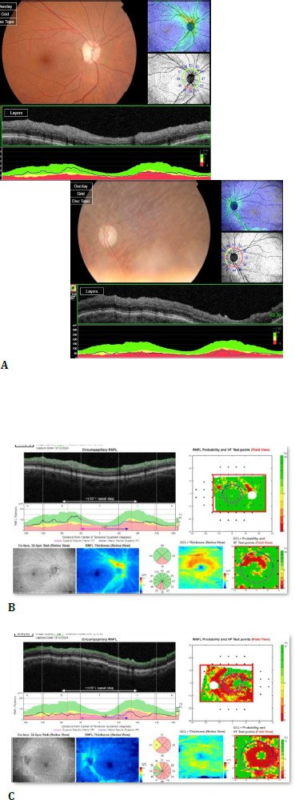
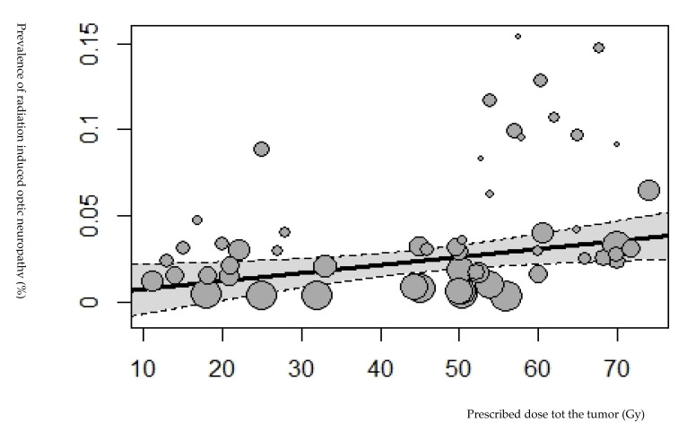

1458 — Bệnh thần kinh thị do xạ ở trẻ: ngấm thuốc giao thoa "giả u", mù muộn không hồi phục / Radiation-induced optic neuropathy (RION) in children
Tags: pattern:teo-thi pattern:ngam-thuoc-day-thi pattern:mat-thi-luc-sau-xa vung:than-kinh-thi vung:mat vung:giao-thoa-thi protocol:MRI-hoc-mat protocol:OCT-RNFL protocol:thi-truong protocol:VEP score:PENTEC incidentaloma:khong
Mức chắc chắn (certainty): tổng hợp y văn (literature synthesis) — ghép ca nguyên văn người lớn 66 Gy → mù hai mắt, có MRI + OCT (Benetti et al. 2026, PMC13453118, CC BY 4.0), đoàn hệ proton 89 bệnh nhân có 39 ca RION (Thariat et al. 2026, PMC13583721, CC BY 4.0), phân tích gộp 225 bài RION (Thariat et al. 2026, PMC13742046), tổng quan 70 nghiên cứu (Kinaci-Tas et al. 2023, PMC10093581, CC BY 4.0), đoàn hệ trẻ sống sót u cơ vân đầu cổ 74 mắt (Morfouace et al. 2026, PMC13330630, CC BY-NC-ND 4.0) và tổng quan độc tính mắt của xạ (Arturi et al. 2025, PMC12384690). Nhóm không có bệnh nhân của mình; số liệu trẻ em còn mỏng — phần lớn ngưỡng liều suy từ người lớn + PENTEC.
Câu chốt: sau xạ vùng trên yên/hốc mắt, dây thị và giao thoa có thể phì đại + tăng tín hiệu T2/STIR + ngấm thuốc — hình ảnh giống hệt u tái phát — rồi teo dần; bệnh nhân mất thị lực không đau, một bên rồi sang bên kia, trung vị 16–30 tháng sau xạ. Chốt chẩn đoán không phải hình ảnh đơn thuần mà là bản đồ liều: tổn thương nằm gọn trong trường chiếu, đối xứng, liều > 50 Gy và không có khối. Xạ 57 Gy → 5%, 64 Gy → 50% nguy cơ (PENTEC). Gọi nhầm thành tái phát u → mổ/xạ lại oan trên một dây thị đã kiệt; gọi nhầm thành viêm thị → corticoid kéo dài vô ích.
1. Tổng quan bệnh học – cơ chế hình ảnh (TẠI SAO)
1.1 Tổn thương mạch → thiếu máu → chết sợi trục, không phải "viêm"
- Dây thị là chất trắng trung ương (myelin do tế bào ít nhánh), không có tế bào Schwann, không tái sinh; nuôi dưỡng bằng động mạch trung tâm võng mạc + nhánh màng não — mật độ mao mạch thấp hơn võng mạc.
- Xạ gây tổn thương tế bào nội mô → viêm mạch tắc nghẽn + gốc tự do → thiếu máu cục bộ sợi trục. Lessell mô tả bộ ba giảm mạch máu (hypovascularity) – giảm tế bào đệm (hypocellularity) – thiếu ôxy (hypoxia): mạch nhỏ dần bị xóa, tế bào thần kinh đệm và mạch đỡ mất, vi môi trường thiếu ôxy mạn → chuyển hóa sợi trục sụp.
- Thí nghiệm trên động vật (20 Gy/2 lần) cho thấy 30 tuần sau xạ giảm mạnh protein vận chuyển sợi trục (dynein-1, kinesin-1/2) trong khi α/β-tubulin và SMI 31 không đổi → hỏng vận chuyển sợi trục là cơ chế sớm, không phải hỏng khung xương tế bào. Vì vậy tổn thương chức năng đứng trước tổn thương cấu trúc: thị lực mất trước khi MRI teo.
1.2 Vì sao MRI ngấm thuốc — và vì sao dễ gọi nhầm u
- Hàng rào máu–dây thị bị phá vỡ ở đoạn chiếu xạ → T1 sau tiêm ngấm thuốc; phù sợi trục + tăng nước nội bào → T2/STIR tăng tín hiệu, kèm phì đại từng đoạn. Đây là phản ứng mô, không phải khối tân sinh: bờ mờ, theo trục dây thị, đối xứng hai bên, dừng đúng ranh giới trường chiếu.
- Giai đoạn muộn: sợi trục chết → teo: dây thị mảnh, mất ngấm thuốc, RNFL/GCL mỏng trên OCT, gai thị nhợt. Trên MRI teo không hồi phục, còn ngấm thuốc có thể thoái triển.
- Vì sao trẻ khác người lớn: (1) đường thị vẫn đang myelin hóa/lớn nên cùng liều, phân liều lớn hơn gây tổn thương nhiều hơn (α/β ≈ 2–3 Gy — mô đáp ứng muộn); (2) khối u trẻ (craniopharyngioma, glioma đường thị, medulloblastoma, u cơ vân đầu cổ, retinoblastoma) nằm sát đường thị nên khó né; (3) trẻ không tự báo ám điểm → phát hiện muộn, teo đã thành lập; (4) trẻ có cửa sổ ngôn ngữ/thị giác nên mù một bên = nhược thị cộng thêm.
1.3 Ngưỡng định lượng (bắt buộc nhớ)
| Tham số | Con số | Nguồn |
|---|---|---|
| Ngưỡng liều "an toàn" kinh điển | < 50 Gy (phân liều < 2 Gy): nguy cơ gần như không đáng kể | PMC13742046, PMC13453118 |
| PENTEC — dây thị/giao thoa | 57 Gy → 5%; 64 Gy → 50% | PMC12384690 (dẫn PENTEC) |
| QUANTEC — 3D-CRT | Dmax < 55 Gy → < 3%**; **Dmax > 60 Gy → 7–20% | PMC12384690 |
| SRS đơn phân liều | Dmax < 12 Gy → < 10% | PMC12384690 |
| Trẻ u cơ vân đầu cổ (n = 74 mắt) | RION chỉ xuất hiện khi Dmax > 53 GyEQD2 vào dây thị | PMC13330630 |
| Nghiên cứu 514 u sọ hầu | < 59 Gy: 1%; ≥ 60 Gy: 5,8% | PMC12384690 |
| Tỷ lệ chung | 2,0% (70 nghiên cứu); 4,5% khi > 50 Gy vs 1,7% khi < 50 Gy | PMC10093581 |
| Phân tích gộp 2026 | u trong mắt: 17,0%; ngoài mắt 4,7% (phân liều thường) / 2,1% (giảm phân liều); u hệ TKTW: 2,77% | PMC13742046 |
| Retinoblastoma xạ áp (plaque) | 15,59% (186 mắt, theo dõi 3,83 năm) và 20,90% (134 mắt, 5 năm) | PMC13742046 |
| Thời gian tiềm tàng | trung vị 16–30 tháng; trung bình 36 tháng (3–108 tháng); cá biệt > 10 năm | PMC13742046, PMC12384690 |
| Yếu tố làm nặng | liều mỗi phân liều > 2 Gy, tăng huyết áp, hút thuốc, đái tháo đường, tuổi lớn | PMC12384690 |
- Điểm chết người về ngưỡng: RION vẫn xảy ra dưới 55 Gy (nhất là SRS < 12 Gy) ở người có tăng huyết áp/hút thuốc** — nên "liều thấp" không loại trừ, và ngược lại **> 64 Gy không có nghĩa chắc chắn mù (phụ thuộc phân liều, thể tích, mô lành còn lại).
2. Mẫu hình + chẩn đoán phân biệt theo vị trí (Gamut)
Mẫu hình khởi điểm: trẻ giảm thị lực không đau, tiến triển vài tuần, RAPD dương, gai thị phù nhẹ rồi nhợt, thị trường ám điểm trung tâm/đường giữa, không sốt, không đau khi liếc — sau xạ 3 tháng–3 năm.
Chia gamut theo vị trí tổn thương nhìn thấy trên MRI (không theo triệu chứng):
| Vị trí | Thực thể | Điểm phân biệt cốt lõi |
|---|---|---|
| Dây thị trong hốc mắt (prechiasmal) | RION · viêm thị do ức chế điểm kiểm soát miễn dịch (ICI) · NAION/AION · u xâm lấn dây thị · viêm màng não ung thư | RION: ngấm thuốc đoạn trong trường chiếu, không đau; ICI: đau khi liếc, ngấm quanh dây (perineuritis); NAION: gai phù + khiếm khuyết nửa trên/dưới, ngấm ít/không |
| Giao thoa thị (chiasmal) | RION · tái phát craniopharyngioma · glioma đường thị tiến triển · di căn màng não · giãn não thất cấp · apoplexy tuyến yên | RION: đối xứng, không khối, dừng ở ranh giới liều; tái phát: khối lệch, có nang/vôi, xâm lấn mô xung quanh, kèm suy tuyến yên/não úng thủy |
| Võng mạc–hoàng điểm | Bệnh võng mạc do xạ + phù hoàng điểm · tắc nhánh tĩnh mạch · xuất huyết dịch kính | Đáy mắt thấy tổn thương (xuất tiết, phù, thiếu máu cục bộ); OCT phù nang; không giải thích được RAPD đơn thuần |
| Đầu dây thị (đĩa) | Teo thị do glôcôm sau xạ (bài 1450) · bệnh thần kinh thị do thiếu máu · teo sau viêm | IOP cao, C/D lớn, góc đóng/tân mạch; cần đo nhãn áp trước khi quy cho RION |
- Mnemonic 4R cho "mù sau xạ": Radiation (RION) – Recurrence (u tái phát) – Retinopathy (bệnh võng mạc do xạ) – Rx–immune (viêm thị do ICI/liệu pháp miễn dịch). Thêm Ischaemic (NAION/AION) khi bệnh nhân lớn tuổi/có mạch máu.

RION sau xạ 66 Gy: (A, C) T2/STIR — giao thoa và đoạn trước giao thoa dày + tăng tín hiệu; (B, D) T1 sau tiêm — ngấm thuốc đối xứng cả hai dây thị. Ảnh nguyên bản: Benetti et al. 2026 (PMC13453118), CC BY 4.0.3. Bảng so sánh phân biệt (ma trận đối chiếu)
| Thực thể | Hình ảnh điển hình (MRI + OCT) | Chốt vào (rule-in) | Chốt loại (rule-out) | Gợi ý xác nhận |
|---|---|---|---|---|
| RION | Ngấm thuốc đoạn dây thị/giao thoa trong trường chiếu, T2/STIR tăng, phì đại nhẹ đối xứng, không khối; muộn: teo + RNFL mỏng | Liều Dmax > 50 Gy + tiềm tàng 3 tháng–3 năm + tổn thương dừng đúng ranh giới liều + không có khối | Có khối đặc/lệch bên, xâm lấn mô quanh, hoặc ngấm thuốc ngoài trường chiếu → không phải RION đơn thuần | Đối chiếu bản đồ liều trên kế hoạch xạ; OCT/VEP theo dõi; không sinh thiết |
| Tái phát u tại giao thoa (craniopharyngioma/glioma) | Khối lệch bên, có nang/vôi hóa, xâm lấn, DWI hạn chế khuếch tán (u đặc tế bào), giao thoa dày không đều | Khối mới/lớn lên so phim cũ + hiệu ứng khối + suy tuyến yên/não úng thủy | Ngấm thuốc đối xứng, dừng ở ranh giới chiếu, không lớn lên sau 3–6 tháng → không phải tái phát | So phim cũ cùng chuỗi, đo 2 chiều, hội chẩn xạ trị–nội tiết |
| Viêm thị do ICI | Ngấm thuốc quanh dây (vỏ dây thị), khu trú trong hốc mắt, có thể một bên; gai phù | Đang dùng anti-PD1/CTLA4 + đau khi liếc + ngấm vỏ dây thị | Ngấm thuốc đối xứng cả giao thoa, không đau → nghiêng RION | Ngừng ICI thử, corticoid; đáp ứng một phần gợi ý ICI |
| NAION/AION | Gai phù, không/tăng ngấm rất ít dây thị, đĩa "chật" | Khởi phát giờ–ngày, khiếm khuyết thị trường ngang/dọc, đau ít, tuổi lớn, yếu tố mạch máu | Tiến triển tuần–tháng, đối xứng, có tiền sử xạ > 50 Gy → nghiêng RION | CRP/ESR nếu nghi AION; theo dõi thị trường |
| Bệnh võng mạc do xạ (kèm phù hoàng điểm) | Xuất tiết, xuất huyết, phù hoàng điểm trên OCT (nang), thiếu máu cục bộ trên FA | Tổn thương đáy mắt khớp bản đồ liều + OCT phù nang | OCT không phù, RNFL mỏng đơn thuần + MRI ngấm giao thoa → RION | FA/OCTA; anti-VEGF nếu phù hoàng điểm (bài 1409/1418) |
| Teo thị do glôcôm sau xạ | C/D lớn, IOP cao, góc đóng/tân mạch; MRI dây thị teo nhưng không ngấm | IOP > 21 mmHg (trẻ: theo tuổi) + C/D lớn + RAPD | IOP bình thường, góc mở, MRI ngấm thuốc giao thoa → không phải glôcôm | Đo IOP nhiều lần, soi góc, UBM (bài 1450) |
- Ảnh OCT minh họa hậu quả: RNFL mỏng không đối xứng — mắt bệnh mỏng ưu thế vùng dưới, mắt còn lại mỏng lan tỏa; GCL teo gần như toàn bộ. Đây là dấu chứng muộn, không phải dấu chốt chẩn đoán.

(A) RNFL hai mắt; (B, C) mặt cắt RNFL + GCL. Ảnh nguyên bản: Benetti et al. 2026 (PMC13453118), CC BY 4.0.3.1 Dấu hiệu "giả u" cần đọc đúng
- Ngấm thuốc theo trục, bờ mờ, không có bờ khối — u thật thường bờ rõ, lệch bên, có nang/vôi.
- Dừng ở ranh giới trường chiếu (so bản đồ liều): dấu mạnh nhất, nhưng không tuyệt đối vì LIQ/ánh xạ có thể lan ngoài.
- Đối xứng hai bên ở giao thoa: u giao thoa hiếm khi đối xứng hoàn hảo; RION hay gặp vì cả hai dây thị nằm trong cùng trường.
- Có phì đại mà không có hiệu ứng khối (không chèn bể quanh giao thoa, không giãn não thất).
4. Protocol chụp + hệ phân độ/điểm chuẩn hóa
4.1 Chụp — làm gì, dày bao nhiêu
- MRI 1,5–3 T, gồm: T2/STIR fat-sat hốc mắt + giao thoa lát 2–3 mm (trục + coronal vuông góc dây thị), T1 fat-sat trước và sau gadolinium (lát 1–3 mm), DWI/ADC khi cần loại u đặc tế bào; FLAIR toàn não để tìm di căn màng não/tái phát.
- Bắt buộc đọc kèm: kế hoạch xạ (bản đồ liều EQD2 vào dây thị/giao thoa) + phim MRI trước xạ (baseline) — không có baseline thì không được kết luận "mới".
- Trước xạ (khuyến nghị): chụp MRI baseline + đo thị lực, thị trường 30-2, OCT RNFL/GCL, VEP P100 để có mốc so sánh — đoàn hệ proton 89 bệnh nhân dùng đúng bộ này lặp lại theo lịch, và thị trường (MD/PSD) là chỉ số mạnh nhất phát hiện RION (độ chính xác 75–79%; mô hình đa phương thức 81,7%).
- Khi có triệu chứng: MRI ngay + khám thần kinh nhãn khoa trong 24–48 giờ; nếu MRI âm tính mà lâm sàng mạnh → chụp lại sau 4–8 tuần (ngấm thuốc có thể xuất hiện muộn).
4.2 Ngưỡng liều & phân độ
- Mục tiêu lập kế hoạch: Dmax dây thị/giao thoa ≤ 54 Gy EQD2 (dưới ngưỡng 5% của PENTEC là 57 Gy), ưu tiên ≤ 50 Gy; phân liều ≤ 2 Gy/lần; SRS: Dmax < 10–12 Gy; khi khối sát đường thị → proton/xạ điều biến để cắt liều.
- Phân độ CTCAE (thần kinh thị): độ 2 = giảm thị lực có triệu chứng, hạn chế hoạt động; độ 3 = thị lực ≤ 20/200 ở mắt bị ảnh hưởng; độ 4 = mù mắt. Ghi cả thị lực + thị trường + RNFL vì CTCAE dựa thị lực bỏ sót tổn thương sớm.
flowchart TD
A[Trẻ sau xạ vùng trên yên/hốc mắt giảm thị lực không đau] --> B[Khám: RAPD, gai thị, thị trường 30-2, OCT RNFL/GCL]
B --> C[MRI T2/STIR + T1 sau tiêm có bản đồ liều]
C --> D{Có khối đặc/lệch bên/lớn hơn phim cũ?}
D -->|Có| E[Tái phát u: hội chẩn, DWI, nội tiết, không sinh thiết mù]
D -->|Không| F{Ngấm thuốc đối xứng, dừng ở ranh giới liều, Dmax > 50 Gy?}
F -->|Có| G[RION: ngừng ICI nếu có, corticoid, HBO sớm, theo dõi OCT/thị trường]
F -->|Không| H{Xét viêm thị ICI, NAION, bệnh võng mạc do xạ, glôcôm}
H --> I[Điều trị theo nguyên nhân + chụp lại 4-8 tuần]
4.3 Điều trị — trung thực về bằng chứng
- Không có điều trị chuẩn. Tổng quan hệ thống cho thấy tiêm nội nhãn anti-VEGF và oxy cao áp (HBO) sớm là hai hướng có triển vọng nhất; kháng đông hệ thống, bevacizumab toàn thân và corticoid không chứng minh hiệu quả.
- HBO có lợi nhất khi bắt đầu trong 48–72 giờ và trước khi gai thị nhợt; ca nguyên văn 66 Gy thất bại với corticoid + HBO + IVIG và đi tới mù hai mắt — nhấn mạnh dự phòng bằng liều quan trọng hơn điều trị.
- Nếu đang dùng ICI: ngừng tạm + corticoid là phép thử chẩn đoán–điều trị (viêm thị do ICI có thể hồi phục một phần).
- Theo dõi: OCT RNFL/GCL + thị trường mỗi 3–6 tháng trong 2 năm đầu, sau đó 6–12 tháng; teo tiến triển = tổn thương đã cố định, không tăng liều xạ lại vì "MRI còn ngấm".
5. Biến thể bình thường và cạm bẫy
- "Dây thị dày" do vỏ bao dịch não tủy: trên T2, khoang dưới nhện quanh dây thị sáng — đo trên T1 sau tiêm và coronal vuông góc, đừng đo trên trục (partial volume).
- Ngấm thuốc sinh lý màng não quanh dây thị ở trẻ nhỏ/gadolinium liều cao — đối chiếu bên đối diện và dùng fat-sat.
- Bẫy "satisfaction of search": thấy u cũ ổn định là dừng, bỏ qua giao thoa ngấm thuốc — phải đọc dây thị → giao thoa → đường thị sau thành một chuỗi liên tục.
- Bẫy "MRI bình thường": giai đoạn sớm có thể chưa ngấm thuốc; bệnh nhân vẫn mù. Không loại trừ RION bằng MRI âm tính.
- Bẫy "teo = đã ổn": teo thị xuất hiện sau khi thị lực đã mất; thấy teo không có nghĩa bệnh ngừng tiến triển — mắt bên kia có thể mù sau vài tháng (ca nguyên văn: mắt trái rồi mắt phải).
- Bẫy trẻ em: trẻ không than ám điểm, chỉ lé mắt/kém theo dõi/học kém; phải đo thị lực theo tuổi và so hai mắt; nhược thị có thể che một RION một bên.
- Bẫy gọi "tái phát" trên MRI: ngấm thuốc tồn tại nhiều tháng–năm; chỉ gọi tái phát khi có khối/lớn dần/kèm dấu hiệu mới, không dựa vào "còn ngấm".
6. Tự lượng giá — Blind Quiz
Ca 1 — Nữ 73 tuổi, u hắc tố niêm mạc mũi, xạ hậu phẫu 66 Gy/33 lần. 10 tháng sau: mờ mắt trái rồi mù, sau đó mờ mắt phải. Không đau.
- Câu hỏi: Tổn thương ở đâu? Ngấm thuốc đối xứng hay lệch? Nêu 3 chẩn đoán phân biệt và dấu hiệu nào loại u tái phát?
Bấm để hiện đáp án (findings + chẩn đoán)
- Dấu hiệu: giao thoa và đoạn trước giao thoa hai bên dày, tăng tín hiệu T2/STIR, ngấm thuốc T1 sau tiêm đối xứng; không có khối lệch bên, không xâm lấn mô quanh.
- Chẩn đoán: RION sau xạ 66 Gy — liều > 64 Gy (PENTEC 50%), tiềm tàng 10 tháng (trong khoảng trung vị 16–30 tháng), tiến triển tuần tự hai mắt.
- Loại u tái phát vì: đối xứng + không khối + không hiệu ứng khối; nhưng phải so bản đồ liều và phim trước xạ mới chắc.
- Diễn biến: thất bại với corticoid + HBO + IVIG → mù hai mắt; RNFL mỏng, GCL teo.
- Nguồn ảnh: Benetti et al. 2026 (PMC13453118), CC BY 4.0.
Ca 2 — Bé gái 8 tuổi, u cơ vân đầu cổ đã xạ proton, 14 tháng sau kém nhìn mắt phải, không đau, RAPD (+).
- Câu hỏi: OCT cho thấy gì? OCT có chẩn đoán được nguyên nhân không? Bước tiếp theo?
Bấm để hiện đáp án (findings + chẩn đoán)
- Dấu hiệu: RNFL mỏng ưu thế vùng dưới ở mắt phải, mỏng lan tỏa ở mắt trái; teo GCL.
- Trả lời: OCT chỉ cho thấy mất sợi trục/ganglion — không phân biệt nguyên nhân (RION, glôcôm, viêm thị, chèn ép). Đây là hậu quả, không phải chốt.
- Bước tiếp: MRI có bản đồ liều + thị trường 30-2 + VEP; đo IOP/soi góc để loại glôcôm; so phim trước xạ.
- Trong đoàn hệ trẻ u cơ vân (74 mắt): RION chỉ xuất hiện khi Dmax > 53 GyEQD2 vào dây thị — dưới ngưỡng này phải tìm nguyên nhân khác.
- Nguồn ảnh: Benetti et al. 2026 (PMC13453118), CC BY 4.0 (ảnh minh họa hậu quả OCT; bối cảnh ca 2 là tình huống dựng theo số liệu PMC13330630).
Ca 3 — Hội chẩn xạ trị: bệnh nhi medulloblastoma, khối u sát giao thoa. Bác sĩ hỏi "xạ bao nhiêu thì mù?".

- Câu hỏi: Đọc biểu đồ; vì sao liều u không phải liều dây thị? Trả lời ngưỡng nào cho gia đình?
Bấm để hiện đáp án (findings + chẩn đoán)
- Biểu đồ: tỷ lệ RION tăng theo liều u được chỉ định; trung bình < 1% ở 10–30 Gy và khoảng 3–5% ở 70 Gy, phân tán rất rộng (0–15%) — vì trục hoành là liều u, không phải liều dây thị.
- Vì sao: cùng liều u, dây thị có thể nhận 5 Gy hay 60 Gy tùy khoảng cách/kỹ thuật; ngưỡng thật là liều EQD2 vào dây thị/giao thoa.
- Trả lời: 57 Gy → 5%, 64 Gy → 50% (PENTEC); mục tiêu Dmax ≤ 54 Gy EQD2, tốt nhất ≤ 50 Gy; trẻ có khối sát đường thị → proton để hạ liều dây thị.
- Nguồn ảnh: Kinaci-Tas et al. 2023 (PMC10093581), CC BY 4.0.
Bài liên quan chéo
- 400 – Tổng quan Mắt & thị giác
- 1450 – Glôcôm sau xạ trị ở trẻ (teo thị do glôcôm sau xạ — phải loại trước)
- 1419 – Bệnh võng mạc do xạ ở trẻ sau xạ trị u não/retinoblastoma
- 1409 – Bệnh võng mạc do xạ sau xạ trị u nội nhãn/hốc mắt
- 431 – U thần kinh thị (khối dây thị thật — phân biệt với "giả u" do xạ)
- 432 – Vùng yên (craniopharyngioma tái phát tại giao thoa)
- 1459 – Đục thể thủy tinh do xạ sau retinoblastoma (cùng trường xạ, cùng lịch theo dõi)
Ảnh
images/1458_optic-nerve_MRI_PMC13453118-Fig2.jpg— MRI 4 bình diện, CC BY 4.0, nguyên bản (không crop/ghép).images/1458_rnfl_OCT_PMC13453118-Fig1.jpg— OCT RNFL/GCL, CC BY 4.0, nguyên bản.images/1458_dose-response_Chart_PMC10093581-Fig3.jpg— biểu đồ bong bóng tỷ lệ RION theo liều, CC BY 4.0, nguyên bản.- Chi tiết nguồn + giấy phép:
images/CREDITS.md; link bài gốc:sources.md.
Không dùng để chẩn đoán độc lập khi chưa có người hướng dẫn.